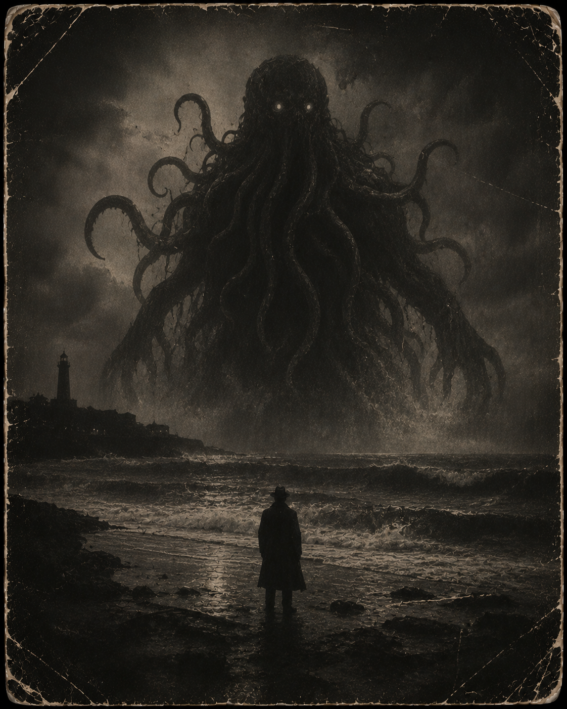

🐙 Entity Image

Threat Level
Severe
Classification
Reality Distortion Entity
Containment Status
Unstable Monitoring
FILE STATUS: RESTRICTED • CLEARANCE: PHANTOM LEVEL • ARCHIVE ACCESS LOGGED
📖 Description
The Eldritch One is a reality-distorting entity whose presence causes perception, logic, and physical certainty to become unreliable.
Encounters are often described as impossible to fully remember. Researchers report seeing shapes that should not exist, hearing patterns in silence, and feeling watched by something far larger than the room itself.
⚙️ Known Behaviour
The Eldritch One bends reality around its wounds, reducing the effectiveness of attacks once containment has begun to destabilise it.
As its strength falls, the surrounding environment becomes increasingly unreliable. Researchers may experience false movement, altered messages, or delayed reactions.
Prolonged exposure is not advised.
⚠️ Containment Notes
- Do not attempt to understand the full shape of the entity.
- Do not count the eyes.
- If the room begins repeating itself, leave immediately and do not look back.
📜 Archive Connection
All recorded appearances, defeats, and containment events involving this entity are logged automatically through the Phantom Realm archive system.
Previous File Return to Archive Next File